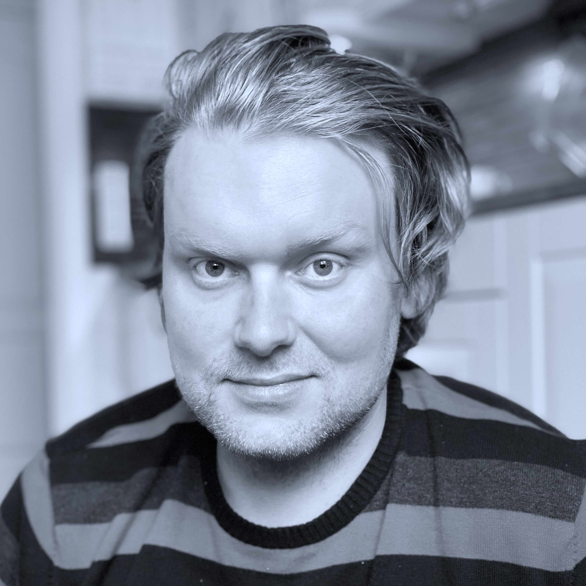

About me
Hello! I´m Fredrick and I live in a small town called Sala. Here I live with my girlfriend,
our two children and two crazy cats as well. Today I am working as a electrical designer at Vattenfall Eldistribution
and have handled many kinds of projects, such as building new infrastructure between cities,
smaller installations of renewable energy sources, contact for certain municipalities, and everything in between.
As of today, I am studying Java and Javascript at Lernia for two years. Its one of my childhood fascinations,
that I have, part by growing up with games and computers as such, as long as I remember.
I am really exited about this and would love to see what this journey will take me.
Education & Work
Education, 2006-2007, Qualified vocational training, Electricity technician.
Work 2004-2006, Did work att Vattenfall Services as a hired operator sporadically, during these years.
Work 2008, Hired at Sweco Energuide to help Vattenfall Services with customer matters.
Work 2009-2011, Full time work at Vattenfall Services as a electrical designer. Same matters as above.
Work 2011-2021, Handeling bigger projects such as infrastructure matters between cities and land, contact with municipalities, as a electrical designer.
Work 2021-20XX, Sitting today with matters who deals with renewable energy sources, customer contact etc.